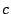
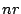

Characters with a special meaning in Asf+Sdf may cause problems when they are
needed as ordinary characters in the lexical syntax. The backslash character
(`\') is used as escape character for
the quoting of special characters. You
should use `\' whenever you need special
character as ordinary character in a definition.
All individual characters in character classes, except digits and letters,
are always escaped with a backslash.
In literal strings, the following characters are special and should be escaped:
\: escape character.
You may use the following abbreviations in literals and in character classes:
\n: newline character
\r: carriage return
\t: horizontal tabulation
\: a non-printable character with the decimal code .